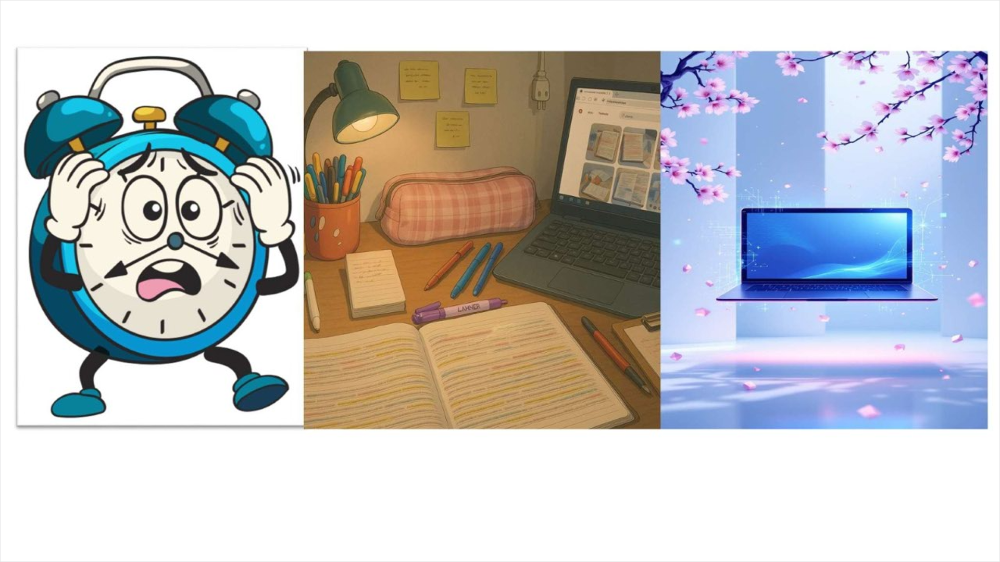

This page demonstrates an image map. An image map allows one image to contain multiple clickable areas that link to different pages in the web site. This technique makes navigation more interactive and visually engaging for users.
The image below contains three sections that represent different parts of student life: a daily routine, good study spots, and useful study tools. Click on any section of the image to open the related page and learn more about that topic.
